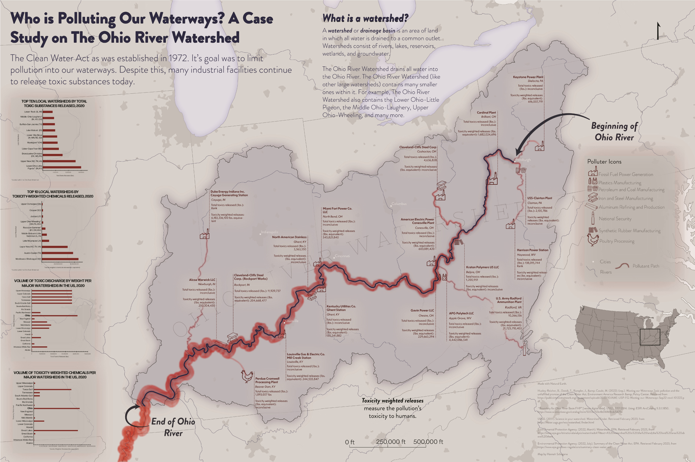
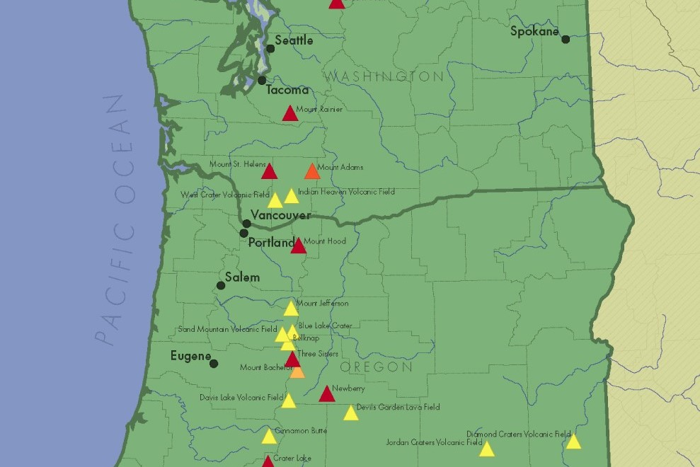
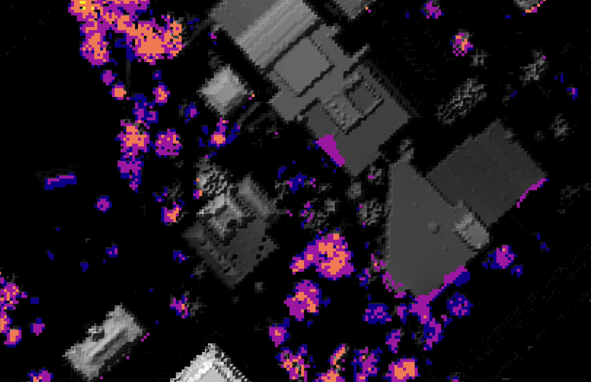
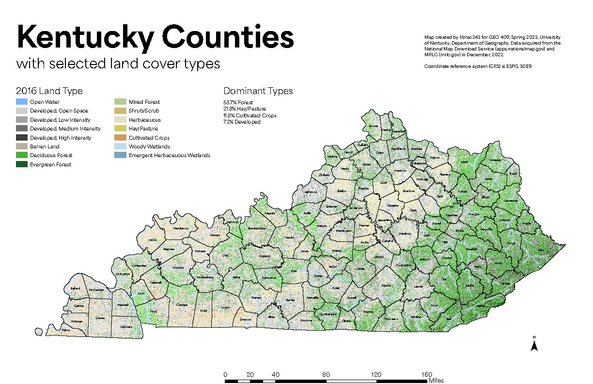

Close Menu
Hannah
Schagene
Home
About
☰
Hannah Schagene
Portfolio
Ohio River Industrial Pollution

Pacific Northwest Volcano Hazards

Louisville Land Use Change
University of Kentucky Tree Canopy

Kentucky Counties Land Use

Red River Gorge LIDAR Render
The State of LGBTQ+ Rights
River River Gorge LIDAR Video
×
Powered by
w3.css